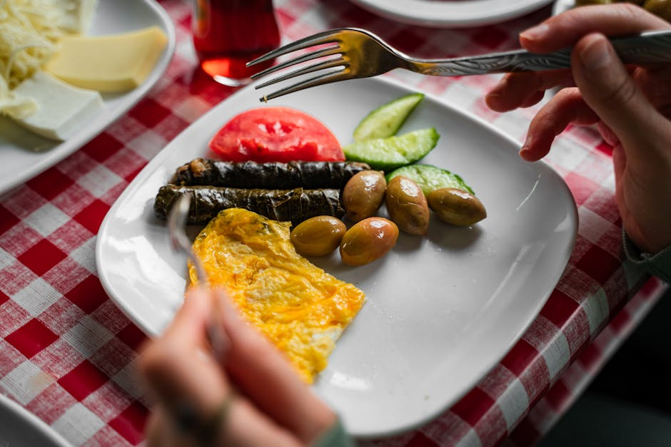

← Back to all nutrition guides
A realistic guide for busy professionals over 40.
As men age, particularly after 50, maintaining a healthy diet becomes crucial to support overall well-being and vitality. With busy work schedules and personal commitments, it can be challenging to focus on meal planning and nutrition. However, being intentional about what we eat can make a significant difference in energy levels, weight management, and overall health. This article presents a straightforward meal plan tailored for men over 50, emphasizing nutritious foods that are easy to prepare and fit into a hectic lifestyle. By adopting a few simple strategies, it's possible to maintain nutritional balance without sacrificing flavor or convenience. Let’s explore why meal planning is essential for busy professionals, and how to navigate the process effectively.
Want a personalized version of this strategy?
Try the AI Food Coach
Proper nutrition plays a vital role in the health of men over 50. At this stage in life, metabolism tends to slow down, which can lead to weight gain if calorie consumption isn’t managed. Moreover, the risk of chronic diseases, such as heart conditions, diabetes, and high blood pressure, increases. Adequate nutrition can help mitigate these risks while promoting mental clarity, emotional resilience, and physical strength. Busy professionals often struggle to find time for healthful meals, which may lead to reliance on fast food and processed snacks. This can create a cycle of energy crashes and the feeling of being overwhelmed. By prioritizing nutrition and making deliberate food choices, men can enhance their health, boost productivity, and improve their quality of life. A balanced meal plan rich in whole foods, lean proteins, healthy fats, and plenty of fruits and vegetables can aid in keeping energy levels steady throughout a busy day.
Creating a meal plan doesn’t have to be time-consuming or complicated. A simple strategy consists of a few key elements: meal prepping, selecting versatile ingredients, and building a balanced plate. Start with a weekly grocery list that includes lean proteins (like chicken, fish, and legumes), whole grains (such as quinoa and brown rice), and a variety of colorful fruits and vegetables. Dedicate a couple of hours each week for meal prepping. This could mean cooking larger batches of grains or proteins to use throughout the week or chopping vegetables in advance for easy access. Building a balanced plate is straightforward: fill half your plate with veggies, one-quarter with whole grains, and one-quarter with protein. Another tip is to keep healthy snacks on hand, like nuts or yogurt, to prevent grabbing unhealthy options during busy hours. By keeping it simple and organized, men can enjoy nutritious meals without feeling overwhelmed.
These strategies work best when personalized to your lifestyle and goals.
Most people know what foods are healthy. The hard part is knowing what to eat today. Today's Food Coach creates a simple, personalized daily plan based on your goals and lifestyle.
Start Your PlanFor a typical day, start with a breakfast of oatmeal topped with berries and almonds. For lunch, consider a quinoa salad with grilled chicken and assorted veggies, drizzled with lemon dressing. Dinner can be a baked salmon filet served with brown rice and steamed broccoli. Don’t forget healthy snacks like a piece of fruit or a handful of mixed nuts between meals to maintain energy levels.
One common mistake men over 50 make is skipping meals or relying too heavily on convenience foods, which tend to be less nutritious. This can lead to overeating later in the day as hunger builds. Another issue is not paying attention to portion sizes; as metabolism slows down, even healthy foods can lead to weight gain if consumed in excess. Additionally, neglecting hydration is a frequent oversight. With busy schedules, it can be easy to forget to drink enough water, which is essential for overall health. Focusing solely on physical appearance and ignoring the importance of mental nutrition can also be detrimental. Incorporating a variety of foods is essential for cognitive health as well. Understanding and avoiding these common pitfalls can help men over 50 create a more balanced approach to eating.
To successfully implement a meal plan, consider the following practical tips: Firstly, embrace batch cooking—preparing meals in larger quantities not only saves time but also ensures you have healthy options ready. Secondly, invest in good food storage containers to keep prepped meals fresh and easy to grab on busy days. Use a calendar or app to track meals for the week; this keeps you organized and reduces impulse decisions. Try to make mealtime enjoyable by experimenting with new recipes, which can prevent boredom and motivate you to stick to your plan. Lastly, include family or friends in meal prepping or sharing recipes; this makes the process more social and can help keep you accountable to your goals.
Look for meals that include plenty of vegetables, lean proteins, and whole grains. Avoid fried items and sugary drinks. You can always ask for dressings or sauces on the side, and don't hesitate to request modifications to make a dish healthier.
Healthy snacks can help keep your energy levels stable throughout the day. Choose options rich in protein and fiber, like nuts, yogurt, or fruit, to prevent extreme hunger and overeating at meal times.
Water should be your go-to drink. You can also enjoy herbal teas or electrolyte-infused water, especially if you are active. Avoid sugary beverages and excessive caffeine, which can be dehydrating.
Generate a personalized meal strategy based on your lifestyle and goals.
Try the AI Food Coach